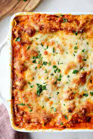

Lasagna

Description
This recipe requires a lot of work but it is well worth the effort. The
ingredients listed below yield 12 servings. It will take 2 hours and 30
minutes to cook, 30 minutes of prep, and an additional 15 minutes to let
it rest and cool. Hope you enjoy! Recipe is courtesey of John Chandler
Nutrition Information
- Calories: 448
- Protein: 29.7g
- Carbohydrates: 36.5g
- Fat: 21.3g
- Cholestrol: 81.8mg
- Sodium: 1400.4mg
Ingredients
- 1 Pound Sweet Italian sausage
- 3/4 Pound Lean Ground Beef
- 1/2 Cup Minced Onion
- 2 Cloves of Garlic, Crushed
- 1 (28 Ounce) Can of Crushed Tomatoes
- 2 (6 ounce) cans tomato paste
- 2 (6.5 Ounce) cans of canned tomato sauce
- 1/2 Cup Water
- 2 Tablespoons of White Suagr
- 1 1/2 Tablespoons of Dried Basil Leaves
- 1/2 Teaspoon of Fennel Seeds
- 1 Teapsoon of Italian Seasoning
- 1 1/2 Teaspoons Salt, divided or to taste
- 1 1/4 Teaspoon of Ground Black Pepper
- 4 Tablespoons Chopped Fresh Parsley/li>
- 12 Lasagna Noodles
- 16 Ounces of Ricotta Cheese
- 1 Egg
- 3/4 Pound Mozzarella Cheese, Sliced
- 3/4 Cup of Grated Parmesan Cheese
Steps
-
In a Dutch oven, cook sausage, ground beef, onion, and garlic over
medium heat until well browned. Stir in crushed tomatoes,
tomato paste, tomato sauce, and water. Season with sugar, basil, fennel
seeds, Italian seasoning, 1 teaspoon salt, pepper, and 2 tablespoons
parsley. Simmer, covered, for about 1 1/2 hours,
stirring occasionally.
-
Bring a large pot of lightly salted water to a boil. Cook
lasagna noodles in boiling water for 8 to 10 minutes.
Drain noodles, and rinse with cold water. In a mixing bowl, combine
ricotta cheese with egg, remaining parsley, and 1/2 teaspoon salt.
- Preheat oven to 375 degrees F (190 degrees C).
-
To assemble, spread 1 and 1/2 cups of meat sauce in the
bottom of a 9x13-inch baking dish. Arrange 6 noodles
lengthwise over meat sauce. Spread with one half of the ricotta cheese
mixture. Top with a third of mozzarella cheese slices. Spoon 1 1/2 cups
meat sauce over mozzarella, and sprinkle with 1/4 cup Parmesan cheese.
Repeat layers, and top with remaining mozzarella and Parmesan cheese.
Cover with foil: to prevent sticking, either spray foil with cooking
spray, or make sure the foil does not touch the cheese.
-
Bake in preheated oven for 25 minutes. Remove foil, and
bake an additional 25 minutes. Cool for
15 minutes before serving.
Recipe
Return to Top
Return to Main Page